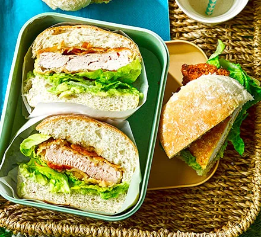

Healthy Eating 101
Home
Healthy Snacks
Healthy Meals
Healthy Desserts
About Us
Contact Us
Healthy Non-vegetarian Snacks
Healthy Vegetarian Snacks
Healthy Vegan Snacks
Healthy Non-Vegetarian Snacks
Indian Chicken Keema Sliders
Indian Chicken Keema Sliders - Ingredients
4 Onions , chopped
6 Tomatoes , chopped
1/2 kg Chicken , minced
1-1/2 cup Curd (Dahi / Yogurt)
1 Inch Ginger , chopped
4 cloves Garlic , chopped
2 Green Chillies , slit lengthwise
1/2 teaspoon Red Chilli powder
1/2 teaspoon Black pepper powder
1 tablespoon Lemon juice
2-3 tablespoon Coriander (Dhania) Leaves , chopped, for garnish
Salt , to taste
15 Burger buns , for sliders (small)
2 tablespoon Butter (Salted)
For Masala
1 teaspoon Cumin seeds (Jeera)
2 Cinnamon Stick (Dalchini)
3 Cloves (Laung)
4 Black pepper corns
3 tablespoon Coriander (Dhania) Seeds
2 Star anise
3 Kashmiri dry red chillies
Indian Chicken Keema Sliders - Preparation method
Firstly roast all the masalas including cumin seeds, cinnamon stick, cloves, black pepper corns, coriander seeds, star anise and Kashmiri dry red chillies at low heat in a flat pan till fragrant. Set it aside.
Once cool, powder them or pound in a pestle and mortar. Heat the oil in a pan on medium-high flame.
Once the oil is hot and simmering, add the onion, ginger, garlic and green chillies.
Keep and eye on it and keep sautéing for about 15-20 minutes till the onions moisture and start to turn brown.
Reduce the flame to low, add the ground spices. Saute for 20 seconds and add in the onions. Add the chopped tomatoes with their water and keep cooking till the tomatoes soften and turn mushy.
If the mixture is burning, add a splash of water. This should take another 10 minutes. Add yogurt in 3 batches. Mixing well every time you add the yogurt.
Cook for about 2 minutes. Next add in the chicken keema and with your ladle break any clumps and mix well.
Do this step quickly before the chicken starts to cook to avoid lumps. Add water if required, cook the chicken in the spices for about 10-15 minutes till the curry starts to simmer.
Once it simmers (bubbles on the surface) cook for another 5 minutes to ensure its done. Finish with juice of one whole Lemon and Coriander Leaves.
Toast the slider buns with little bit of butter. Scoop the chicken keema inside and serve.
Prawn Masala Kozhukattai
Prawn Masala Kozhukattai - Ingredients
250 grams Prawns , cleaned, deveined and cut into small pieces.
1 Onion , finely chopped
1 Tomato , finely chopped
1 Green Chilli , finely chopped
1 inch Ginger , finely chopped
4 cloves Garlic , finely chopped
1 sprig Curry leaves
Coriander (Dhania) Leaves , a small bunch finely chopped
1/2 teaspoon Mustard seeds (Rai/ Kadugu)
2 Dry Red Chillies
1/2 teaspoon Turmeric powder (Haldi)
1/2 cup Fresh coconut , grated
1 tablespoon Coconut Oil
Salt , to taste
1 cup Water
For the dough
1-1/2 cups Rice flour
1-1/2 cups Water
Salt , to taste
Prawn Masala Kozhukattai - Preparation method
To begin making the Prawn Masala Kozhukattai Recipe - Prawn Masala Dumplings, prep all the ingredients and keep them ready.
Heat oil in a heavy bottomed pan over medium heat. Add the mustard seeds, dry red chillies (broken), curry leaves and allow it to crackle. Add the ginger, garlic and onions - saute for a few minutes until the onions soften.
Add the tomatoes, red chilli powder, turmeric powder, curry leaves, salt and saute until the tomatoes become mushy and soft. Add the chopped prawns, coconut and little water. Cover the pan and cook till the prawns are cooked and the masala dries up.
Once done, check the salt and spices in the prawns masala and turn off the heat.
Once done, garnish with coriander leaves and the prawn masala filling is ready.
In a saucepan, add the rice flour, water and salt. Stir well to combine.
Turn on heat to medium. Stir continuously until the rice batter becomes thick and leaves the sides of the pan. The process takes between 15 to 20 minutes for the batter to getting into a dough like mixture.
It is very important not to let go of the mixture even for a second without stirring, as it will form lumps. To make a smooth wrapper we need to have a dough without any lumps.
Test for doneness: Hold the latter with the cooked batter and it should not fall off. This means the dough for the wrapper is ready.
Turn of heat and transfer the rice dough into another container. Cover with a wet muslin cloth and keep warm.
With a little oil in a cup, smear the oil in your hands and knead the rice flour dough well to remove any lumps. At all times make sure keep the dough covered with a wet muslin cloth to prevent the dough from drying out.
Take a lemon size portion of the dough, make into a ball and press the dough in the palm of your hands to make a flat dough, cup your palms a bit so it forms a depression in the center.
Place the prawn masala filling in the center and bring the edges of the dough together to the center. Continue the similar process with the remaining portions of the dough and prawn masala filling.
Note: Don't make the dough too thin, the filling could come out when you try to wrap it.
Note: Keep dipping and smearing your fingers and palms with sesame oil when you handle a new portion of the dough. This will prevent the dough from sticking to your hands
Prepare the steamer filled with water. Place the filled Prawn Masala Kozhukattai in the steamer plate and into the steamer. Steam for about 10 minutes until the Prawn Masala Kozhukattai / Dumplins look shiny and smooth.
You will also notice that if it is not cooked, the rice wrapper will be sticky.
Once they are steamed, the Prawn Masala Kozhukattai are to be served.
Nutty chicken satay strips
Nutty chicken satay strips - Ingredients
2 tbsp chunky peanut butter (without palm oil or sugar)
1 garlic clove, finely grated
1 tsp Madras curry powder
few shakes soy sauce
2 tsp lime juice
2 skinless, chicken breast fillets (about 300g) cut into thick strips
about 10cm cucumber, cut into fingers
sweet chilli sauce, to serve
Nutty chicken satay strips - Preparation method
Heat oven to 200C/180C fan/gas 4 and line a baking tray with non-stick paper.
Mix 2 tbsp chunky peanut butter with 1 finely grated garlic clove, 1 tsp Madras curry powder, a few shakes of soy sauce and 2 tsp lime juice in a bowl. Some nut butters are thicker than others, so if necessary, add a dash of boiling water to get a coating consistency.
Add 2 skinless chicken breast fillets, cut into strips, and mix well. Arrange on the baking sheet, spaced apart, and bake in the oven for 8-10 mins until cooked, but still juicy.
Eat warm with roughly 10cm cucumber, cut into fingers, and sweet chilli sauce. Alternatively, leave to cool and keep in the fridge for up to 2 days.
Crispy chicken & smashed avocado baps

Crispy chicken & smashed avocado baps - Ingredients
2 large skinless chicken breasts
100g plain flour
1 egg , beaten
splash of milk
3 tbsp ground almonds
1 tbsp sesame seeds
3 tbsp vegetable or rapeseed oil
2 small avocados , stoned, peeled and halved
½ lime , juiced
4 baps or rolls, split
1 Little Gem lettuce , leaves separated
Crispy chicken & smashed avocado baps - Preparation method
Put the chicken on a board and cover with a sheet of baking parchment. Bash with a rolling pin to an even thickness, then cut both breasts in half diagonally.
Put the flour on a plate. Season. Combine the egg and milk in a wide, shallow bowl. Dust the chicken in the flour, shake off the excess, then dunk into the egg mix. Add the almonds and sesame seeds to any remaining flour on the plate and coat the chicken in the mixture.
Heat half the oil in a large frying pan over a medium heat and fry the chicken for 4-5 mins on each side until crisp and golden, adding the rest of the oil when you turn the pieces over. Cut into the thickest part of one of the pieces to check it’s cooked through, then leave to cool for 5 mins.
Scoop the avocado flesh into a bowl with the lime juice and a pinch of salt, then mash. Spread over the baps, top with the lettuce, then the chicken. Cut in half.
Healthy Vegetarian Snacks
Vegetable Gyoza
Vegetable Gyoza - Ingredients
250g plain flour
cornflour, for dusting
For the filling
200g white cabbage
4 chestnut mushrooms
1 carrot
4 water chestnuts (optional)
thumb-sized piece of ginger, peeled and finely grated
2 garlic cloves, finely grated
3 spring onions, finely sliced
2 tbsp sunflower oil, plus extra for frying
1 tbsp soy sauce
1 tbsp saké, Shaohsing rice wine or dry sherry
For the dipping sauce
6 tbsp soy sauce
2 tbsp rice wine vinegar
crispy chilli oil (optional)
Vegetable Gyoza - Preparation method
If you’re making your own dough, tip the flour and 1 tsp salt into a bowl. Bring a kettle to the boil and measure 150ml boiling water. Slowly pour the water over the flour while mixing with a spoon to form a stiff dough. When the dough is cool enough to handle, tip onto a surface and knead for 10 mins until smooth. Wrap the dough and chill for at least 1 hr. Alternatively, you can use 25-30 shop-bought gyoza skins.
Meanwhile, coarsely grate the cabbage, mushrooms, carrot and water chestnuts, if using, then tip into a bowl. Add the ginger, garlic and spring onions. Heat the oil in a wok, then tip in all the veg and stir-fry over a high heat for 3 mins until softened. Drizzle over the soy sauce and sake, and cook for 2-3 mins. Season to taste. Tip back into the bowl to cool completely.
Divide the dough in two. Scatter a surface generously with cornflour and roll one ball of dough out until paper-thin. Use a 10cm cutter to cut out rounds of dough and pile them up (they won’t stick because of the cornflour). Repeat with all the dough, re-rolling the trimmings until you have about 25 skins.
To assemble, sprinkle cornflour on a tray and have a bowl of cold water ready. Hold a skin in the palm of one hand and put a teaspoon of the filling in the centre. Dip your finger in the water and wipe around the inside edge of the skin. Bring the edges of the skin together, pinching pleats along one side. Space them out on a baking tray and freeze, then tip into a bag and put back in the freezer. Will keep for three months. Can be cooked from frozen.
Heat a drizzle of oil in a non-stick frying pan with a lid. Fry, flat-side down, for 2 mins until golden. Add 100ml water to the pan and cover. Cook over a medium heat for 3-5 mins until the water has evaporated and the gyoza is cooked through. Remove the lid and leave the gyoza to sizzle on the bottom for a minute. Mix the dipping sauce ingredients together, then serve with the gyoza.
Burrata bruschetta
Burrata bruschetta - Ingredients
40g sugar snap peas , halved diagonally, blanched
40g peas , blanched
40g broad beans , double podded, blanched
4 radishes , very thinly sliced
2 red chillies , deseeded and thinly sliced
1 small pack mint , chopped
1 small pack parsley , chopped
1 tbsp chardonnay vinegar
100ml olive oil , plus extra to brush the toast
4 slices sourdough or ciabatta
2 large burrata , at room temperature
Burrata bruschetta - Preparation method
Mix the sugar snap peas, peas, broad beans and radish with the chillies and herbs in a bowl. Add the chardonnay vinegar and olive oil, and toss to coat.
Heat grill to high. Brush the bread with oil and sprinkle with sea salt. Grill for 2 mins each side until lightly charred. Put each piece of toast on a small plate, then halve burratas and gently spread over the toast. Divide the summer beans, pile on top and season to serve.
Cheese-stuffed garlic dough balls with a tomato sauce dip
Cheese-stuffed garlic dough balls with a tomato sauce dip - Ingredients
50g butter, cubed
300g strong white bread flour
7g sachet fast-action dried yeast
1 tbsp caster sugar
200g block mozzarella, cut into 1.5cm cubes
65g gruyère, coarsely grated (optional)
For the garlic butter
100g butter
2 garlic cloves , crushed
1 rosemary sprig, leaves picked and finely chopped
For the tomato sauce dip
1 tbsp olive oil , plus extra for the bowl and baking sheet
1 garlic clove , sliced
250g passata
1 tsp red wine vinegar
1 tsp caster sugar
pinch of chilli flakes
½ small bunch of basil , torn, plus extra to serve
Cheese-stuffed garlic dough balls with a tomato sauce dip - Preparation method
Heat 175ml water in a saucepan until steaming, then add the butter. Remove from the heat and leave to cool until the mixture is just warm (it should not be hot). Combine the flour, yeast, sugar and 1 tsp salt in a large bowl or stand mixer.
Add the cooled butter mixture, and mix to a soft dough using a wooden spoon or the mixer. Knead for 10 mins by hand (or 5 mins using a mixer) until the dough feels bouncy and smooth. Transfer to an oiled bowl and cover with a clean tea towel. Leave somewhere warm to rise for 1½-2 hrs, or until doubled in size. Alternatively, leave to prove in the fridge overnight.
Oil and line a baking sheet with baking parchment. Knock the air out of the dough, then knead again for several minutes. Flatten a small piece of dough (about 20g) into a disc, and put a cube of the mozzarella and a pinch of the gruyère into the middle of the disc.
Enclose the cheeses with the dough, then roll into a ball. Transfer to the prepared baking sheet. Repeat with the remaining cheese and dough, placing the dough balls ½cm apart on the baking sheet – they should be just touching after proving. Cover with a clean tea towel and leave somewhere warm to rise for 30 mins.
Meanwhile, make the garlic butter. Melt the butter in a small pan over a low heat, then stir in the garlic and rosemary. Remove from the heat and set aside until needed.
Heat the oven to 180C/160C fan/gas 4. Brush the risen dough balls with the garlic butter, then bake for 25-30 mins until the dough balls are cooked through and the middles are oozing.
While the dough balls are baking, make the tomato sauce dip. Heat the oil in a saucepan and fry the garlic for 30 seconds. Tip in the passata, vinegar, sugar and chilli flakes, and simmer for 10 mins until thickened.
Season to taste and stir in the basil. Brush the warm dough balls with any remaining garlic butter, then serve with the tomato sauce dip on the side for dunking.
Buffalo Cauliflower
Buffalo Cauliflower - Ingredients
1 tbsp sweet smoked paprika
1⁄2 tbsp ground cumin
1 tsp garlic powder
100g plain flour
200ml buttermilk or kefir
1 head of cauliflower (500g), broken into florets
80g hot sauce
1½ tbsp maple syrup
1 tbsp butter
celery sticks, to serve
For the ranch dip
100g Greek yogurt
3 tbsp mayonnaise
2 tbsp chopped chives
1-2 tbsp milk
Buffalo Cauliflower - Preparation method
Heat the oven to 220C/200C fan/gas 7 and line a baking tray with baking parchment.
Mix together the paprika, cumin, garlic powder, flour and ½ tsp salt in a large bowl. Make a well in the centre and whisk in the buttermilk. Tip in the cauliflower and toss to coat.
Spread out the cauliflower on the baking tray and cook for 20-25 mins, turning halfway through, until crisp at the edges.
Warm the hot sauce, maple syrup and butter in a small pan set over low heat, for 2-3 mins.
Liberally brush over the cauliflower and put back in the oven for 8-10 mins.
For the ranch dip, whisk together the yogurt, mayo, chives, milk and a pinch of salt in a bowl. Serve the with the cauliflower alongside some celery sticks for dipping.
Healthy Vegan Snacks
Vegan flapjacks
Vegan flapjacks - Ingredients
140g dairy-free spread
140g soft light brown sugar
2 tbsp golden syrup
175g rolled oats
75g chopped nuts of your choice
75g dried fruit (such as raisins, dried cranberries, chopped apricots)
Vegan flapjacks - Preparation method
Heat the oven to 160C/140C fan/gas 4 and line a 20cm square baking tin with baking parchment.
Melt the dairy-free spread, sugar and syrup in a saucepan over a medium heat.
Remove from the heat and tip in the oats, chopped nuts and dried fruit.
Transfer to the tin, packing the mix in with the back of a spoon.
Bake for 30 - 35 mins until lightly golden and crisp around the edges.
Leave to cool in the tin before slicing into squares. Keep in an airtight container for up to three days.
Courgette pakoras
Courgette pakoras - Ingredients
2 medium courgettes (about 500g), grated
1 red onion, grated
175g gram (chickpea) flour
1 red chilli, finely chopped
1 tsp ground coriander
1 tsp ground cumin
1 tsp ginger
½ small bunch of coriander, finely chopped
sunflower oil, for deep-frying
coriander, tamarind or mango chutney, to serve (optional)
Courgette pakoras - Preparation method
Put all the ingredients, except the oil, in a bowl with ½ tsp salt, and squidge it all together using your hands. The moisture from the courgettes should help bind everything together; you want a sticky but not overly wet mixture.
Fill a heavy-based saucepan no more than a third full with oil and set over a medium heat until the oil reaches 180C. If you don’t have a cooking thermometer, test it’s ready by dropping in a pinch of the pakora mixture. It should sizzle and turn golden brown after 10-20 seconds.
Carefully drop tablespoons of the mixture into the oil, using another tablespoon to help you slide them in.
Fry for about 2 mins before turning and cooking for a further 2-3 mins until golden brown, crisp and cooked through. Continue frying in batches until all the mixture has been used up.
Leave to drain on kitchen paper. You can keep the cooked pakoras warm in a low oven while you make the rest. Serve immediately with your favourite chutney, if you like.
Date & Walnut Cinnamon bites
Date & Walnut Cinnamon bites - Ingredients
3 walnut halves
3 pitted medjool dates
ground cinnamon, to taste
Date & Walnut Cinnamon bites - Preparation method
Carefully cut each walnut half into three slices, then do the same with the dates.
Place a slice of walnut on top of each date, dust with cinnamon and serve.
Sweet Potato Balls
Sweet Potato Balls - Ingredients
175g sweet potato peeled and roughly chopped (prepared weight)
35g caster sugar
125g tapioca starch
vegetable oil, for deep-frying
Sweet Potato Balls - Preparation method
Steam the sweet potato in a steamer over a medium heat for 15-20 mins until soft enough to insert a cutlery knife into. Mash the sweet potato using a potato masher or a fork until smooth.
Add the sugar, tapioca starch and a good pinch of seasoning, then mix well with your hands.
Gradually pour in 1-2 tbsp water, then mix well until a pliable dough forms.
Divide the dough into four and roll each piece into a long sausage shape around 2cm in diameter.
Cut each length of dough into 2cm pieces and roll them into balls in the palm of your hand. Don’t worry if they crumble, just keep squishing them until they form a ball.
Half-fill a large, heavy-based saucepan with the oil. Heat over a medium temperature until a cooking thermometer reads 120C.
Lower batches of the balls into the oil (you may need to cook them in two or three batches) and fry for 2 mins until they begin to float.
When they are floating, turn down the heat slightly. Turn the balls in the oil using a slotted spoon until they expand in size, doing so every minute, for around 3-4 mins.
Turn the heat back up and continue to deep-fry until golden brown.
Transfer the balls onto kitchen paper using a slotted spoon. Leave to drain and cool a little, then serve.